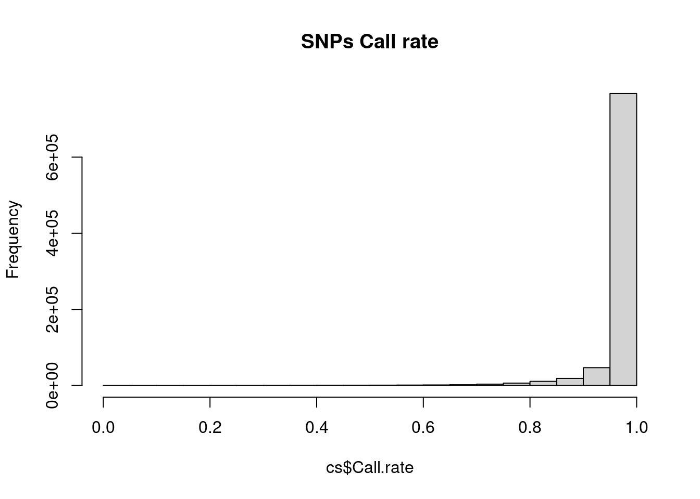

Exercise-1-GWAS
Siming Zhao
2023-12-31
Last updated: 2024-01-02
Checks: 6 1
Knit directory: QBS-statsgen/
This reproducible R Markdown analysis was created with workflowr (version 1.6.2). The Checks tab describes the reproducibility checks that were applied when the results were created. The Past versions tab lists the development history.
The R Markdown file has unstaged changes. To know which version of
the R Markdown file created these results, you’ll want to first commit
it to the Git repo. If you’re still working on the analysis, you can
ignore this warning. When you’re finished, you can run
wflow_publish to commit the R Markdown file and build the
HTML.
Great job! The global environment was empty. Objects defined in the global environment can affect the analysis in your R Markdown file in unknown ways. For reproduciblity it’s best to always run the code in an empty environment.
The command set.seed(20231230) was run prior to running
the code in the R Markdown file. Setting a seed ensures that any results
that rely on randomness, e.g. subsampling or permutations, are
reproducible.
Great job! Recording the operating system, R version, and package versions is critical for reproducibility.
Nice! There were no cached chunks for this analysis, so you can be confident that you successfully produced the results during this run.
Great job! Using relative paths to the files within your workflowr project makes it easier to run your code on other machines.
Great! You are using Git for version control. Tracking code development and connecting the code version to the results is critical for reproducibility.
The results in this page were generated with repository version e4808cd. See the Past versions tab to see a history of the changes made to the R Markdown and HTML files.
Note that you need to be careful to ensure that all relevant files for
the analysis have been committed to Git prior to generating the results
(you can use wflow_publish or
wflow_git_commit). workflowr only checks the R Markdown
file, but you know if there are other scripts or data files that it
depends on. Below is the status of the Git repository when the results
were generated:
Ignored files:
Ignored: .Rproj.user/B81CBE6F/bibliography-index/
Ignored: .Rproj.user/B81CBE6F/ctx/
Ignored: .Rproj.user/B81CBE6F/presentation/
Ignored: .Rproj.user/B81CBE6F/profiles-cache/
Ignored: .Rproj.user/B81CBE6F/tutorial/
Untracked files:
Untracked: .Rproj.user/B81CBE6F/sources/prop/0ED98C8D
Untracked: .Rproj.user/B81CBE6F/sources/prop/9AEFAC31
Untracked: .Rproj.user/B81CBE6F/sources/prop/9F0ECC46
Untracked: .Rproj.user/B81CBE6F/sources/prop/C51E8536
Untracked: .Rproj.user/B81CBE6F/sources/prop/CEEC26AB
Untracked: .Rproj.user/B81CBE6F/sources/prop/D152DC47
Untracked: .Rproj.user/B81CBE6F/sources/prop/EC99B653
Untracked: .Rproj.user/B81CBE6F/sources/prop/F22062D7
Untracked: .Rproj.user/B81CBE6F/sources/prop/FB5E64F1
Untracked: .Rproj.user/B81CBE6F/sources/s-e0e7218a/2CC61BD1-contents
Untracked: .Rproj.user/B81CBE6F/sources/s-e0e7218a/41809F0E
Untracked: .Rproj.user/B81CBE6F/sources/s-e0e7218a/41809F0E-contents
Untracked: .Rproj.user/B81CBE6F/sources/s-e0e7218a/4606F1D0
Untracked: .Rproj.user/B81CBE6F/sources/s-e0e7218a/4606F1D0-contents
Untracked: .Rproj.user/B81CBE6F/sources/s-e0e7218a/67181385-contents
Untracked: .Rproj.user/B81CBE6F/sources/s-e0e7218a/690E4D46-contents
Untracked: .Rproj.user/B81CBE6F/sources/s-e0e7218a/694B620B
Untracked: .Rproj.user/B81CBE6F/sources/s-e0e7218a/694B620B-contents
Untracked: .Rproj.user/B81CBE6F/sources/s-e0e7218a/6B86B775-contents
Untracked: .Rproj.user/B81CBE6F/sources/s-e0e7218a/7DAD17BD-contents
Untracked: .Rproj.user/B81CBE6F/sources/s-e0e7218a/B673F567
Untracked: .Rproj.user/B81CBE6F/sources/s-e0e7218a/B673F567-contents
Untracked: .Rproj.user/B81CBE6F/sources/s-e0e7218a/C175B722-contents
Untracked: .Rproj.user/B81CBE6F/sources/s-e0e7218a/D6419CAC
Untracked: .Rproj.user/B81CBE6F/sources/s-e0e7218a/D6419CAC-contents
Untracked: .Rproj.user/B81CBE6F/sources/s-e0e7218a/D7E31414-contents
Untracked: .Rproj.user/B81CBE6F/sources/s-e0e7218a/E34D4A4D-contents
Untracked: .Rproj.user/B81CBE6F/sources/s-e0e7218a/EDA99CEB-contents
Untracked: .Rproj.user/B81CBE6F/sources/s-e0e7218a/F254ABAC-contents
Untracked: .Rproj.user/B81CBE6F/sources/s-e0e7218a/FA39596B-contents
Untracked: .Rproj.user/shared/notebooks/1EB0B2DC-e1-gwas/1/s/c1lzammkxrbye/
Untracked: .Rproj.user/shared/notebooks/1EB0B2DC-e1-gwas/1/s/c1t2nsjfm2qe6/
Untracked: .Rproj.user/shared/notebooks/1EB0B2DC-e1-gwas/1/s/c253kmjzy3wx6/
Untracked: .Rproj.user/shared/notebooks/1EB0B2DC-e1-gwas/1/s/c33ie2g7kdxi0/
Untracked: .Rproj.user/shared/notebooks/1EB0B2DC-e1-gwas/1/s/cg1sv066q5yme/
Untracked: .Rproj.user/shared/notebooks/1EB0B2DC-e1-gwas/1/s/cgshy06jz7z7m/
Untracked: .Rproj.user/shared/notebooks/1EB0B2DC-e1-gwas/1/s/cjf82vg1kx5mw/
Untracked: .Rproj.user/shared/notebooks/1EB0B2DC-e1-gwas/1/s/cllcn96htab67/
Untracked: .Rproj.user/shared/notebooks/1EB0B2DC-e1-gwas/1/s/clxqgcy429ntx/
Untracked: .Rproj.user/shared/notebooks/1EB0B2DC-e1-gwas/1/s/cn50h0v0w0zuw/
Untracked: .Rproj.user/shared/notebooks/1EB0B2DC-e1-gwas/1/s/csdd4y3yd95j4/
Untracked: .Rproj.user/shared/notebooks/1EB0B2DC-e1-gwas/1/s/cxwhmvf97sdcw/
Untracked: .Rproj.user/shared/notebooks/1EB0B2DC-e1-gwas/1/s/cybrmunyg5sbi/
Untracked: .gitignore
Untracked: code/qqunif.R
Untracked: output/asso.assoc.logistic
Untracked: output/asso.log
Untracked: output/pca.eigenval
Untracked: output/pca.eigenvec
Untracked: output/pca.log
Unstaged changes:
Modified: .Rproj.user/B81CBE6F/persistent-state
Modified: .Rproj.user/B81CBE6F/sources/prop/3814FE49
Modified: .Rproj.user/B81CBE6F/sources/prop/4C8B7780
Modified: .Rproj.user/B81CBE6F/sources/prop/51332097
Modified: .Rproj.user/B81CBE6F/sources/prop/BBFFB970
Modified: .Rproj.user/B81CBE6F/sources/prop/INDEX
Modified: .Rproj.user/B81CBE6F/sources/s-e0e7218a/27031BD8
Modified: .Rproj.user/B81CBE6F/sources/s-e0e7218a/27031BD8-contents
Modified: .Rproj.user/B81CBE6F/sources/s-e0e7218a/34A40D3B
Modified: .Rproj.user/B81CBE6F/sources/s-e0e7218a/6C1FFABC
Modified: .Rproj.user/B81CBE6F/sources/s-e0e7218a/6C1FFABC-contents
Modified: .Rproj.user/B81CBE6F/sources/s-e0e7218a/73BDB580
Modified: .Rproj.user/B81CBE6F/sources/s-e0e7218a/73BDB580-contents
Modified: .Rproj.user/B81CBE6F/sources/s-e0e7218a/lock_file
Modified: .Rproj.user/shared/notebooks/1EB0B2DC-e1-gwas/1/B81CBE6Fe0e7218a/chunks.json
Modified: .Rproj.user/shared/notebooks/1EB0B2DC-e1-gwas/1/s/chunks.json
Modified: .Rproj.user/shared/notebooks/paths
Modified: _workflowr.yml
Modified: analysis/_site.yml
Modified: analysis/e1-gwas.Rmd
Deleted: output/README.md
Note that any generated files, e.g. HTML, png, CSS, etc., are not included in this status report because it is ok for generated content to have uncommitted changes.
These are the previous versions of the repository in which changes were
made to the R Markdown (analysis/e1-gwas.Rmd) and HTML
(docs/e1-gwas.html) files. If you’ve configured a remote
Git repository (see ?wflow_git_remote), click on the
hyperlinks in the table below to view the files as they were in that
past version.
| File | Version | Author | Date | Message |
|---|---|---|---|---|
| Rmd | e4808cd | simingz | 2023-12-31 | build website |
Before the class
- Install
plink.
Two versions
For this exercise, please install plink 1.9. On discovery, plink is
already installed. you can do module load plink to load
plink.
Install R >= 4.1, Rstudio. You can do this on your local computer, the discovery cluster, or use https://posit.cloud/. The free plan offers 25 hours/month.
Install R packages,
snpStats,data.table,glue,dplyr,qqman
install.packages('BiocManager')
BiocManager::install('snpStats')
install.packages("data.table")
install.packages("dplyr")
install.packages("qqman")- Getting the data
This tutorial will use data from the PennCATH study of genetic risk factors for coronary artery disease. Download the data from one of the following sources (the contents are the same):
- Data (zip): Windows
- Data (tar): Mac/Linux
Download and unzip/untar the data; you can read the paper as well if you wish:
The process this data for this tutorial (the orginal ones have a split chromosome issue)
In command line run this:
plink -bfile data/penncath --make-bed --out data/genoIf your plink is installed elsewhere, e.g. in /bin then
you need to run it like /bin/plink. On discovery, plink is
already installed. you can do module load plink to load
plink then run the command above.
File formats
The data are given in “PLINK” format, which is the most common format
for chip-based GWAS data (as of this writing!). PLINK is an
open-source whole genome association analysis toolset designed to
perform a range of basic large-scale analyses in a computationally
efficient manner. It is worth knowing how to use PLINK, although you can
also do most of these things in R.
I’ll discuss PLINK the software program later on; for now, I’ll just describe the organization of its files.
Among the zipped files are three that are necessary to perform a
GWAS, the .bed, .bim, and .fam
files.
.fam
This contains information on the subjects:
library(data.table)
library(dplyr)
Attaching package: 'dplyr'The following objects are masked from 'package:data.table':
between, first, lastThe following objects are masked from 'package:stats':
filter, lagThe following objects are masked from 'package:base':
intersect, setdiff, setequal, union(fam <- fread('data/geno.fam')) V1 V2 V3 V4 V5 V6
1: 10002 1 0 0 1 1
2: 10004 1 0 0 2 1
3: 10005 1 0 0 1 2
4: 10007 1 0 0 1 1
5: 10008 1 0 0 1 2
---
1397: 11591 1 0 0 2 -9
1398: 11592 1 0 0 1 2
1399: 11593 1 0 0 1 1
1400: 11594 1 0 0 1 1
1401: 11596 1 0 0 1 -9There are 1401 rows, one for each subject. The six colums are:
- Family ID
- Individual ID
- Paternal ID
- Maternal ID
- Sex (1=male; 2=female; other=unknown)
- Phenotype
In this data set, columns 2-4 are unimportant. In general, they are used to specify pedigrees (e.g., subject 3 is the daughter of subjects 1 and 2). In this study, however, none of the subjects are related, so the only column that is important is the first, which records the subject’s unique ID.
Phenotype is typically used to record case-control status or something like that, but it is also quite common to just record clinical/biological information in a separate spreadsheet, which is what was done here.
(clinical <- fread('data/penncath.csv')) FamID CAD sex age tg hdl ldl
1: 10002 1 1 60 NA NA NA
2: 10004 1 2 50 55 23 75
3: 10005 1 1 55 105 37 69
4: 10007 1 1 52 314 54 108
5: 10008 1 1 58 161 40 94
---
1397: 11591 0 2 59 34 44 89
1398: 11592 1 1 45 69 101 77
1399: 11593 1 1 59 77 27 41
1400: 11594 1 1 30 NA NA NA
1401: 11596 0 1 64 224 35 96As you can see, we’ve got the FamID to match this
spreadsheet up with the genetic data, the disease status
(CAD=1 means that the subject has coronary artery disease),
and some covariates (age, triglycerides, HDL and LDL cholesterol
levels).
.bim
The .bim file, by contrast, contains information on the
genetic loci (SNPs):
(bim <- fread('data/geno.bim')) V1 V2 V3 V4 V5 V6
1: 1 rs10458597 0 564621 -9 C
2: 1 rs12565286 0 721290 G C
3: 1 rs12082473 0 740857 T C
4: 1 rs3094315 0 752566 C T
5: 1 rs2286139 0 761732 C T
---
861469: 22 rs3810648 0 51175626 C T
861470: 22 rs3865766 0 51186228 A G
861471: 22 rs2238837 0 51212875 C A
861472: 22 rs34726907 0 51213613 T C
861473: 22 rs28729663 0 51219006 A GAs you can see, we have 861473 rows here, one for each SNP measured in the study. The columns are:
- chromosome (1-22, X, Y or 0 if unplaced)
- rs# or snp identifier
- Genetic distance (morgans)
- Base-pair position (bp units)
- Allele 1 (usually minor)
- Allele 2 (usually major)
It is pretty common for column 3 to be ignored, as it is here.
So, for example, the file tells us that genetic locus rs12565286 is located 721290 bases into chromosome 1, and that most people have a C there, but some have a G.
.bed
Finally, the .bed file, which has all the data. This is
by far the largest of the three files, as it contains the entire 1401 by
861473 matrix of genotype calls for every subject and every locus. To
keep things manageable, this file is encoded in a special binary format
– i.e., you can’t just read it in through normal means.
To access it, you’ll have to use specialized applications. I’ll
discuss two, an R package called snpStats and a
command-line interface (CLI) called PLINK.
Software
plink
How to convert your genetic data into plink format?
One can use plink2 binary software to convert your genetic dataset into this format. For example, the following –make-pgen (link to reference) command will convert your input.vcf file into binary_fileset.{pgen,pvar,psam}. Many other input formats are also supported in plink2.
plink2 --vcf input.vcf --make-pgen --out binary_filesetSimilarly, you can convert your genetic dataset into plink1.9 binary format (i.e. the triple of bed,bim,fam) with –make-bed (link to reference) command.
plink2 --vcf input.vcf --make-bed --out binary_filesetNote that the file extension bed here refers to the binary PED format. It is nothing to do with UCSC’s BED (Browser Extensible Data) file format.
snpStats
This is a Bioconductor package. So, you’ll have to install it via
BiocManager
library(snpStats)Loading required package: survivalLoading required package: MatrixTo read in data, there is the read.plink() function:
obj <- read.plink('data/geno')The function assumes that all the files have the same base filename,
and differ only in their extension. If this is not the case, then you
need to specify the filenames for the .bed,
.bim, and .fam files separately.
From here, snpStats has a lot of functions. For example,
here’s a plot (there are 1401 points, one for each subject) of whether
the call rate (% of genotype calls that are non-missing) is related to
the heterozygosity rate (% of loci that are called AB, as opposed to AA
or BB):
plot(row.summary(obj$genotypes)[c(1,3)])Feel free to read the snpStats documentation and explore
for yourself, but one standard thing that one is always interested in is
to simply convert various SNPs to a regular numeric matrix so that you
can analyze them using standard R tools. For example, let’s do a
Fisher’s exact test to see whether CAD is associated with SNP 143:
x <- as(obj$genotypes[,143], 'numeric')
fisher.test(drop(x), as.factor(clinical$CAD))
Fisher's Exact Test for Count Data
data: drop(x) and as.factor(clinical$CAD)
p-value = 0.8043
alternative hypothesis: two.sidedGWAS Quality Control (QC)
Check a few things. In actual GWAS, there are more to check.
Any SNP with a lot of missing data is probably questionable; these SNPs are often excluded from analysis (although we will talk about other approaches later). Likewise, any sample with lots of missing data suggests that there may be issues with the processing of that sample.
cs <- col.summary(obj$genotypes)
rs <- row.summary(obj$genotypes)
hist(rs$Call.rate, main = 'Individuals Call rate')
hist(cs$Call.rate, main = 'SNPs Call rate')
Individuals look good – SNPs, on the other hand, there are definitely some SNPs with lots of missing values. A common practice is to exclude SNPs with >5% or >10% missing data.
We will remove SNPs that may be problematic.
p_hwe <- 2*pnorm(-abs(cs$z.HWE)) # hardy-weinberg equilibrium. extreme value may indicate genotype error.
keep <- cs$MAF > 0.001 &
cs$Call.rate > 0.9 &
abs(cs$z.HWE) < 6.5
(obj$genotypes <- obj$genotypes[, keep])A SnpMatrix with 1401 rows and 752675 columns
Row names: 10002 ... 11596
Col names: rs12565286 ... rs28729663 obj$map <- obj$map[keep, ]
# write plnik files for filtered data.
write.plink(
file.base = "data/geno.qc",
snps = obj$genotypes,
pedigree = obj$fam$pedigree,
id = obj$fam$member,
father = obj$fam$father,
mother = obj$fam$mother,
chromosome = obj$map$chromosome,
genetic.distance = obj$map$cM,
position = obj$map$position,
allele.1 = obj$map$allele.1,
allele.2 = obj$map$allele.2,
sex = clinical$sex,
phenotype = clinical$CAD + 1
)Writing FAM file to data/geno.qc.fam
Writing extended MAP file to data/geno.qc.bim
Writing BED file to data/geno.qc.bed (SNP-major mode)NULLPopulation structure.
It is possible to run PCA inside R, but given the large file size. Usually this is done by running plink from the command line.
plink -bfile data/geno.qc --pca --out output/pcaThen in R, we read in PCs and plot.
## read plink calculated PCs
pcplink = read.table("output/pca.eigenvec",header=F, as.is=T)
names(pcplink) = c("FID","IID",paste0("PC", c(1:(ncol(pcplink)-2))) )
## plot PC1 vs PC2
plot(pcplink$PC1, pcplink$PC2)## plot variance explained by PCs
eigen = read.table("output/pca.eigenval",header=F, as.is=T)[,1]
plot(1:length(eigen), eigen/nrow(pcplink), type = 'b', ylab = 'Proportion of variance explained', xlab = 'PC')
Association testing
Run logistic regression using plink, adjusting for PCs. Run the following from command line.
plink --bfile data/geno.qc --logistic --pheno data/penncath.csv --pheno-name CAD --covar output/pca.eigenvec --covar-number 1-4 --out output/assoRead results into R and plot
res <- fread('output/asso.assoc.logistic')
res <- res[res$TEST == "ADD",]
source("code/qqunif.R")
qqunif(res$P, mlog10_p_thres=12)Warning in qqunif(res$P, mlog10_p_thres = 12): thresholding p to 1e-12Manhattan plot.
bim <- fread('data/geno.qc.bim')
# format data to have readable labels.
manh_data <- data.frame(
SNP = res$SNP,
P = res$P
) %>%
left_join(bim, by = c("SNP" = "V2")) %>%
rename(
CHR = V1,
BP = V4
) # recall that 'bim' files have a standardized format, so the column order is
# always the same
library(qqman)For example usage please run: vignette('qqman')Citation appreciated but not required:Turner, (2018). qqman: an R package for visualizing GWAS results using Q-Q and manhattan plots. Journal of Open Source Software, 3(25), 731, https://doi.org/10.21105/joss.00731.manh_plot <- manhattan(manh_data, ylim = c(0, 10), annotatePval = 5e-6)Citation
Credits go to: https://github.com/pbreheny/adv-gwas-tutorial/tree/master.
https://yosuketanigawa.com/posts/2020/09/PLINK2
https://hakyimlab.github.io/hgen471/L6-population-structure.html
sessionInfo()R version 4.1.0 (2021-05-18)
Platform: x86_64-pc-linux-gnu (64-bit)
Running under: CentOS Linux 7 (Core)
Matrix products: default
BLAS: /software/R-4.1.0-no-openblas-el7-x86_64/lib64/R/lib/libRblas.so
LAPACK: /software/R-4.1.0-no-openblas-el7-x86_64/lib64/R/lib/libRlapack.so
locale:
[1] LC_CTYPE=en_US.UTF-8 LC_NUMERIC=C LC_TIME=C
[4] LC_COLLATE=C LC_MONETARY=C LC_MESSAGES=C
[7] LC_PAPER=C LC_NAME=C LC_ADDRESS=C
[10] LC_TELEPHONE=C LC_MEASUREMENT=C LC_IDENTIFICATION=C
attached base packages:
[1] stats graphics grDevices utils datasets methods base
other attached packages:
[1] qqman_0.1.9 snpStats_1.44.0 Matrix_1.3-3 survival_3.2-11
[5] dplyr_1.0.7 data.table_1.14.0
loaded via a namespace (and not attached):
[1] tidyselect_1.1.1 xfun_0.38 bslib_0.4.2
[4] purrr_0.3.4 splines_4.1.0 lattice_0.20-44
[7] vctrs_0.3.8 generics_0.1.0 htmltools_0.5.5
[10] yaml_2.2.1 utf8_1.2.1 rlang_1.1.0
[13] jquerylib_0.1.4 later_1.2.0 pillar_1.6.1
[16] glue_1.4.2 DBI_1.1.1 BiocGenerics_0.40.0
[19] calibrate_1.7.7 lifecycle_1.0.3 stringr_1.4.0
[22] zlibbioc_1.40.0 workflowr_1.6.2 evaluate_0.20
[25] knitr_1.42 fastmap_1.1.0 httpuv_1.6.1
[28] fansi_0.5.0 highr_0.9 Rcpp_1.0.9
[31] promises_1.2.0.1 cachem_1.0.5 jsonlite_1.7.2
[34] fs_1.6.1 digest_0.6.27 stringi_1.6.2
[37] rprojroot_2.0.2 grid_4.1.0 cli_3.6.1
[40] tools_4.1.0 magrittr_2.0.1 sass_0.4.0
[43] tibble_3.1.2 crayon_1.5.2 whisker_0.4
[46] pkgconfig_2.0.3 MASS_7.3-54 ellipsis_0.3.2
[49] assertthat_0.2.1 rmarkdown_2.21 rstudioapi_0.13
[52] R6_2.5.0 git2r_0.28.0 compiler_4.1.0